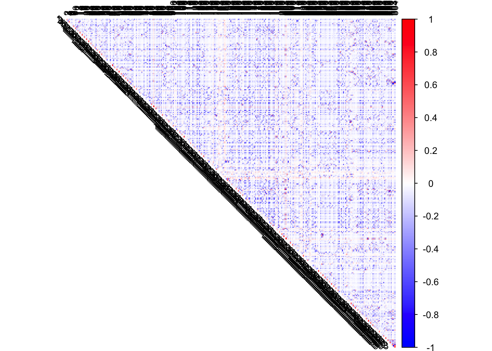

library(CorShrink)
library(ecostructure)
library(corpcor)
library(corrplot)
library(network)
library(statnet)
library(scales)
library(Biobase)
library(limma)data("himalayan_birds")
birds <- exprs(himalayan_birds)
log_cpm_birds <- t(limma::voom(birds)$E)
ymat = scale(log_cpm_birds, scale = TRUE, center = TRUE)pcor2 <- pCorShrinkData(ymat, reg_type = "glmnet", glmnet_alpha = 0.8)
col2 <- c("blue", "white", "red")
corrplot(pcor2, diag = FALSE, col = colorRampPalette(col2)(200), tl.pos = "td",
tl.col = "black", tl.cex = 0.8, rect.col = "white",
na.label.col = "white", method = "color", type = "upper")
colnames(pcor2) <- c(rownames(birds))
rownames(pcor2) <- colnames(pcor2)
tmp <- pcor2[lower.tri((pcor2))]
idx1 <- order(tmp, decreasing = TRUE)[1:25]
idx2 <- order(tmp, decreasing = FALSE)[1:25]
tmp[idx1]## [1] 0.9888860 0.9886311 0.7658025 0.7599949 0.7118505 0.7005307 0.6928543
## [8] 0.6826790 0.6572590 0.6156191 0.6129314 0.6073927 0.6000300 0.5954638
## [15] 0.5888494 0.5858971 0.5854348 0.5672162 0.5496850 0.5462277 0.5426408
## [22] 0.5354098 0.5279475 0.5258894 0.5122830tmp[idx2]## [1] -0.9603030 -0.9382375 -0.8984661 -0.8693361 -0.8640522 -0.8608445
## [7] -0.8431629 -0.8328228 -0.8151713 -0.8010064 -0.7987693 -0.7929924
## [13] -0.7917160 -0.7894634 -0.7883849 -0.7861321 -0.7831861 -0.7759119
## [19] -0.7679360 -0.7656134 -0.7620676 -0.7608243 -0.7561347 -0.7529231
## [25] -0.7513484bird_pairs <- combn(colnames(pcor2),2)t(bird_pairs[,idx1])## [,1] [,2]
## [1,] "Paradoxornis_ruficeps" "Paradoxornis_gularis"
## [2,] "Monticola_cinclorhynchus" "Saxicola_ferreus"
## [3,] "Leiothrix_argentauris" "Paradoxornis_ruficeps"
## [4,] "Hypopicus_hyperythrus" "Aceros_undulatus"
## [5,] "Zoothera_mollissima" "Cochoa_purpurea"
## [6,] "Harpactes_erythrocephalus" "Harpactes_wardi"
## [7,] "Paradoxornis_nipalensis" "Conostoma_oemodium"
## [8,] "Emberiza_fucata" "Pyrrhula_aurantiaca"
## [9,] "Coracina_macei" "Dicrurus_remifer"
## [10,] "Paradoxornis_gularis" "Coracina_macei"
## [11,] "Psarisomus_dalhousiae" "Pitta_brachyura"
## [12,] "Picus_xanthopygaeus" "Cettia_pallidipes"
## [13,] "Pteruthius_flaviscapis" "Pteruthius_melanotis"
## [14,] "Mycerobas_affinis" "Mycerobas_carnipes"
## [15,] "Merops_orientalis" "Megalaima_haemacephala"
## [16,] "Pteruthius_xanthochlorus" "Oriolus_kundoo"
## [17,] "Oriolus_xanthornus" "Oriolus_traillii"
## [18,] "Carpodacus_rubescens" "Pyrrhoplectes_epauletta"
## [19,] "Parus_ater" "Parus_dichrous"
## [20,] "Phaenicophaeus_tristis" "Ceyx_erithaca"
## [21,] "Pericrocotus_roseus" "Abroscopus_albogularis"
## [22,] "Luscinia_pectoralis" "Hodgsonius_phaenicuroides"
## [23,] "Cuculus_saturatus" "Cuculus_canorus"
## [24,] "Psittacula_cyanocephala" "Abroscopus_albogularis"
## [25,] "Seicercus_burkii" "Seicercus_poliogenys"t(bird_pairs[,idx2])## [,1] [,2]
## [1,] "Sturnia_malabarica" "Psittacula_cyanocephala"
## [2,] "Spelaeornis_formosus" "Abroscopus_albogularis"
## [3,] "Leiothrix_lutea" "Cettia_pallidipes"
## [4,] "Napothera_epilepidota" "Yuhina_bakeri"
## [5,] "Heterophasia_annectans" "Pericrocotus_solaris"
## [6,] "Muscicapella_hodgsoni" "Spelaeornis_caudatus"
## [7,] "Paradoxornis_fulvifrons" "Pyrrhoplectes_epauletta"
## [8,] "Aceros_nipalensis" "Napothera_epilepidota"
## [9,] "Brachypteryx_leucophrys" "Heterophasia_annectans"
## [10,] "Pericrocotus_roseus" "Psittacula_cyanocephala"
## [11,] "Brachypteryx_hyperythra" "Actinodura_waldeni"
## [12,] "Actinodura_nipalensis" "Picus_xanthopygaeus"
## [13,] "Phyllergates_cucullatus" "Heterophasia_annectans"
## [14,] "Ocyceros_birostris" "Acridotheres_tristis"
## [15,] "Niltava_grandis" "Pteruthius_flaviscapis"
## [16,] "Prinia_socialis" "Spelaeornis_caudatus"
## [17,] "Heterophasia_annectans" "Heterophasia_picaoides"
## [18,] "Spelaeornis_caudatus" "Dicaeum_ignipectus"
## [19,] "Leiothrix_argentauris" "Paradoxornis_gularis"
## [20,] "Fulvetta_vinipectus" "Carpodacus_rubescens"
## [21,] "Pycnonotus_cafer" "Cinnyris_asiaticus"
## [22,] "Sitta_formosa" "Heterophasia_annectans"
## [23,] "Phoenicurus_frontalis" "Spelaeornis_caudatus"
## [24,] "Cyornis_unicolor" "Phylloscopus_cantator"
## [25,] "Liocichla_phoenicea" "Yuhina_bakeri"This R Markdown site was created with workflowr